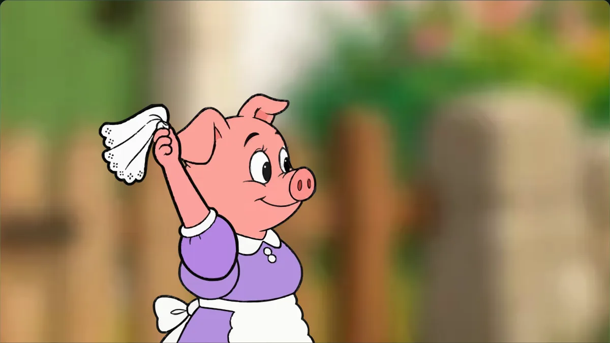
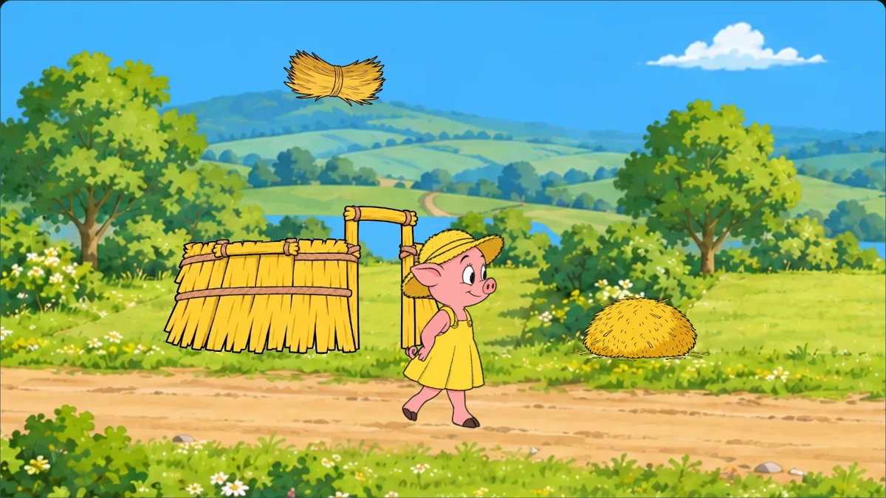
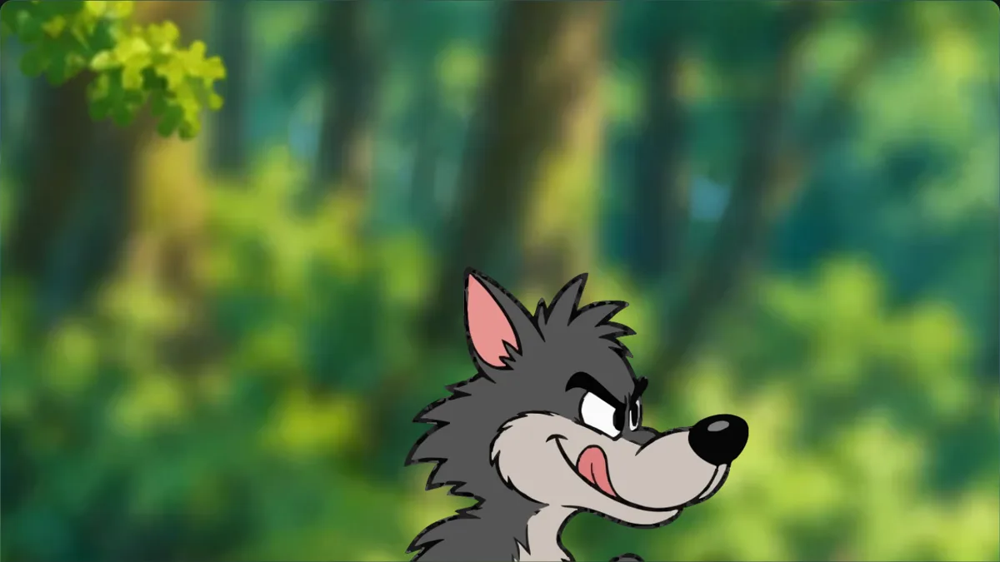
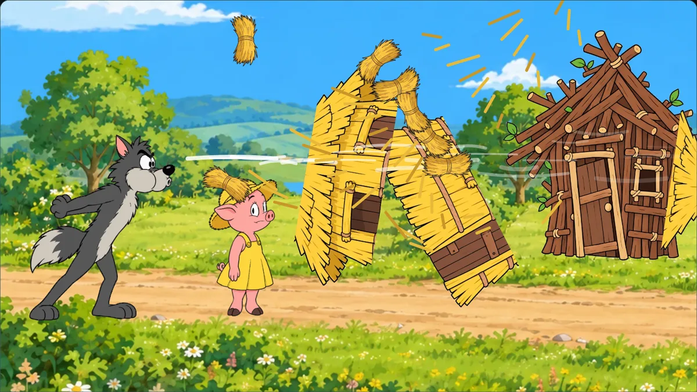
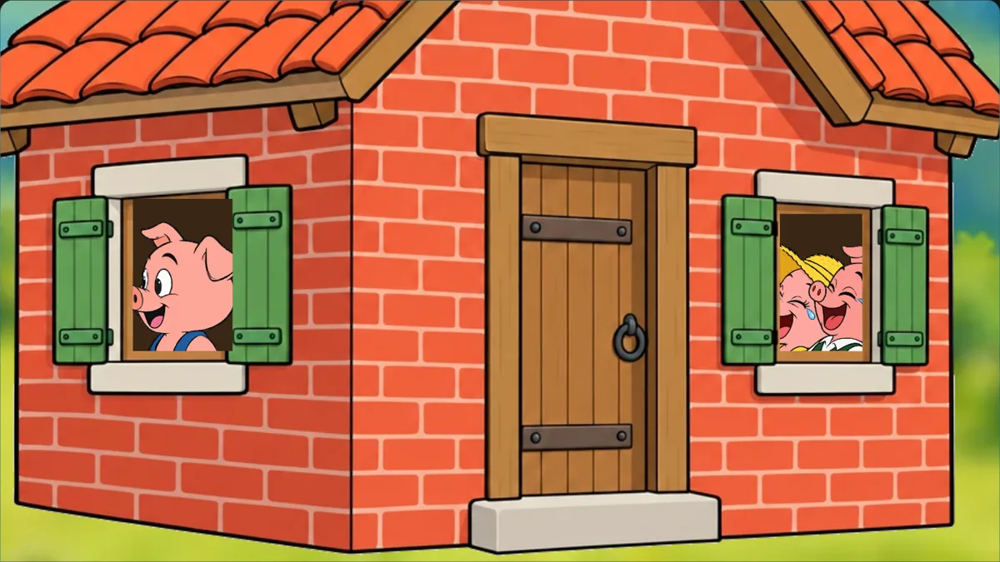
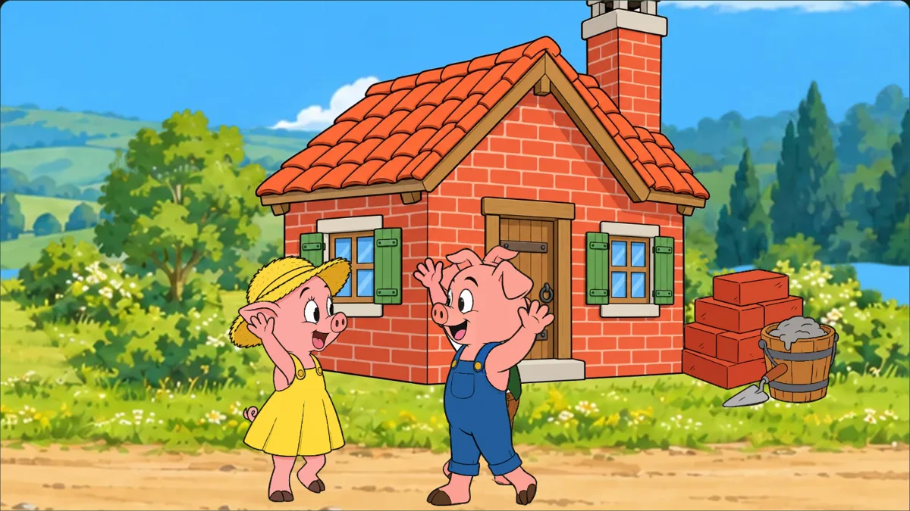
What we set out to do
Take a story with no book and no pictures, and make it an animated film you can pause, scrub and read along with. The pages are the same kind as the rest of the shelf: static web pages, one SVG stage, narration clips driving every move. What was new: the art came from an image model (OpenAI's gpt-image through OpenRouter), and the goal was for it to feel like a TV cartoon, not a slideshow.
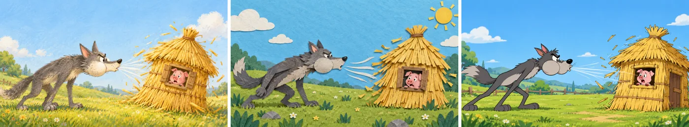
Four tries at a character
- Rotating painted parts. We cut the wolf into image pieces and rotated them at the joints. Too stiff: it read as a paper puppet, with seams at every knee.
- Painted body, code-drawn limbs. Arms and legs became bendable SVG curves with feet planted by inverse kinematics. Much livelier, but the first scene, shot from one fixed camera, still felt like a slideshow.
- Separately painted parts. Heads, bodies, sleeves and hands from separate generations never lined up: arms came out beside the sleeve, collars doubled, hands went missing.
- Characters drawn entirely in code. They lined up perfectly, but looked far too crude next to the painted world.
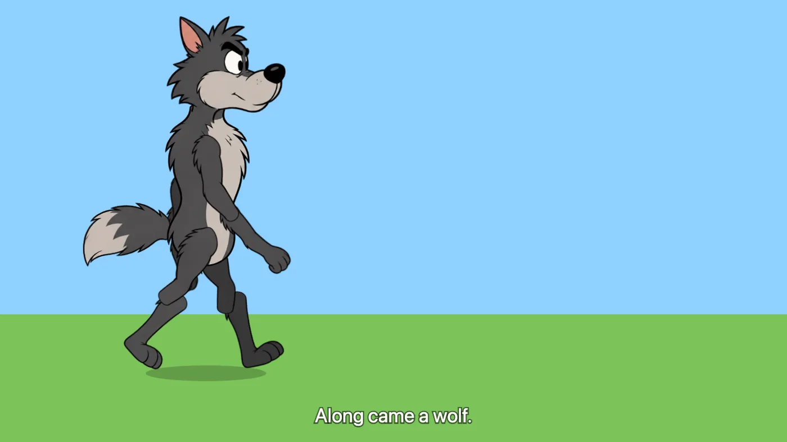
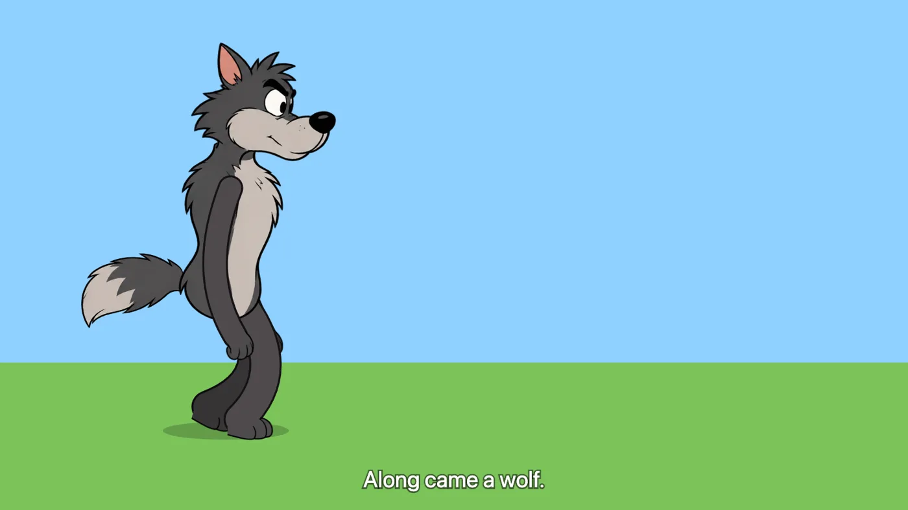
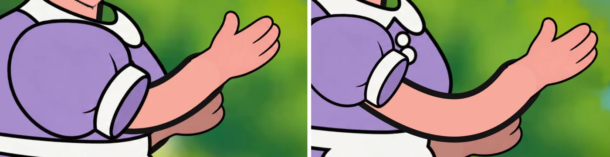
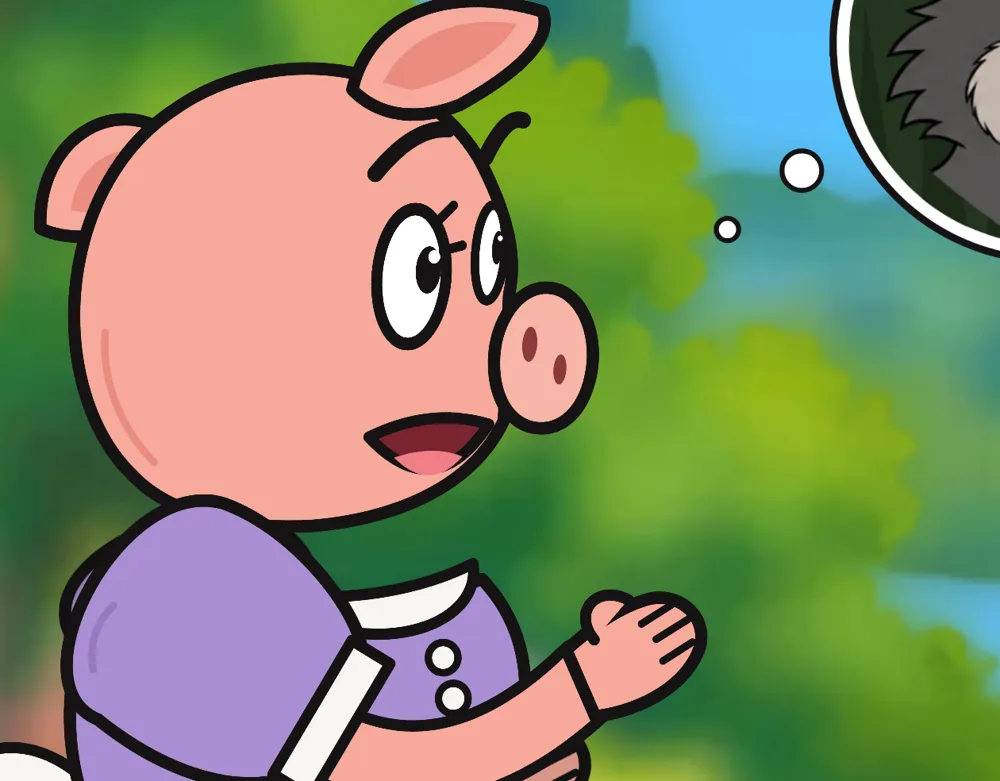
What finally worked
One picture, edited, never redrawn
Each character got one large picture. Every other version was an edit of that same picture: without the near arm, without eyes and mouth, with the legs in each walking pose, with each mouth shape. Because the edits change only a few percent of the pixels, they line up exactly, and a script can cut parts out wherever two pictures differ.
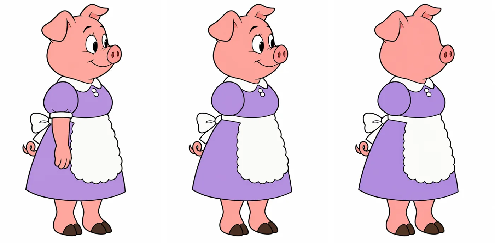
Vectorized, then swapped like a TV cartoon
The cut parts were traced into vector shapes, so close-ups stay sharp. Then they were baked back to images, because live tracing was too slow. Movement comes from swapping drawings the way TV cartoons do. Legs walk on four drawings, each held for a few frames. Arms swap between drawn gestures. Big actions, like sleeping or running, are whole drawings of their own. Code adds the rest: body bounce, blinks, eye movement and the camera.
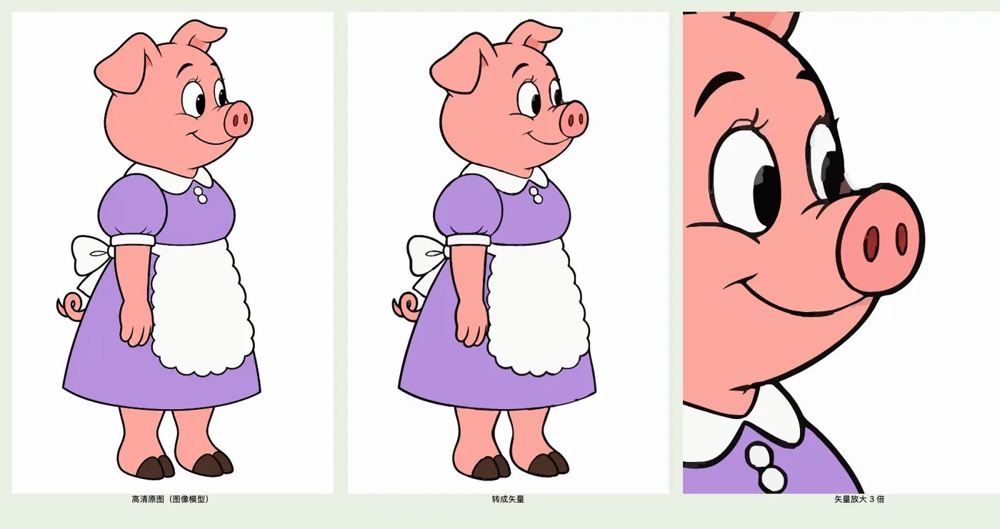
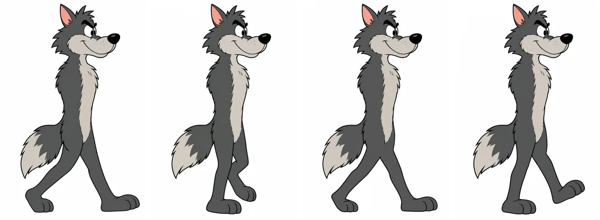
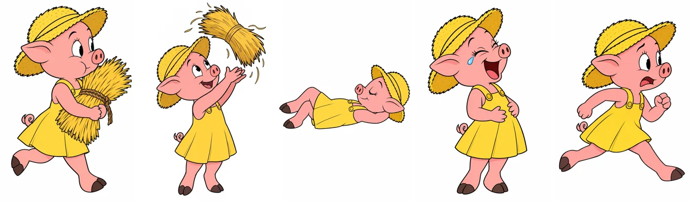
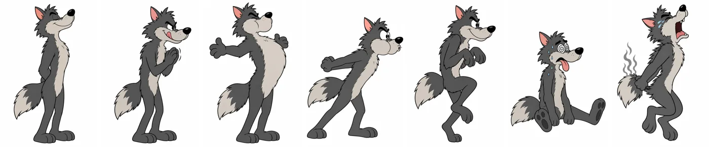
Faces that talk
Each face has a featureless "faceplate" laid over it. On top go moving eyes, lids that slide down to blink, and brows. Mouth shapes are painted by the model, and each one is timed to a word from the voice track.
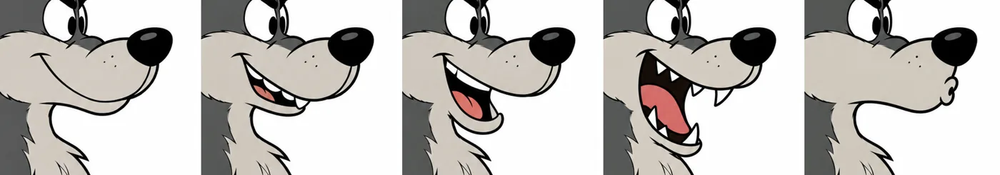
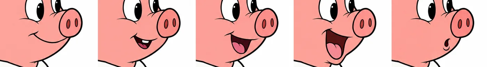
Places, houses and the camera
Backgrounds were painted, then separated into layers: sky, hills, ground, buildings, and flowers close to the camera. Layers slide past each other as the camera moves, and the background softens in close-ups. The houses come in three aligned stages, so building them is a series of thumps, not a wipe. The camera cuts on words: a close-up for whoever speaks, a follow shot when someone runs. Silences were spliced into the narration to give the building and the huffing room to happen.
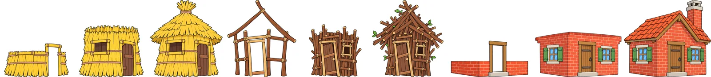
The voices are free text-to-speech, one voice per character; when all three pigs answer the wolf, three voices are stretched to the same length and mixed into a chorus. The music, four instrumental pieces, was generated with Google's Lyria and crossfades between parts of the story, dipping under the voices.
What kept going wrong
Almost every fix came from a problem spotted while watching, and many of them were specific to one character.
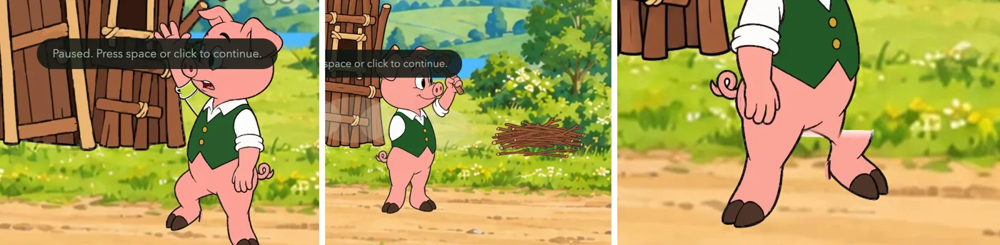
- The second pig wore no trousers in his first design. The image model's safety filter kept refusing his pictures. Another model redrew each one slightly differently, so his body flickered as he walked. In the end he got shorts and was redrawn from scratch.
- A held object belongs to one drawing: the third pig carried the pot while still holding a brick, because his carrying arm was the brick-carrying drawing.
- Anything without its own drawing slides instead of moving, like the wolf running away on a single pose, until we gave it the walking legs.
- Quality "high" cost five times "medium" and, once traced, looked the same. We found out late.
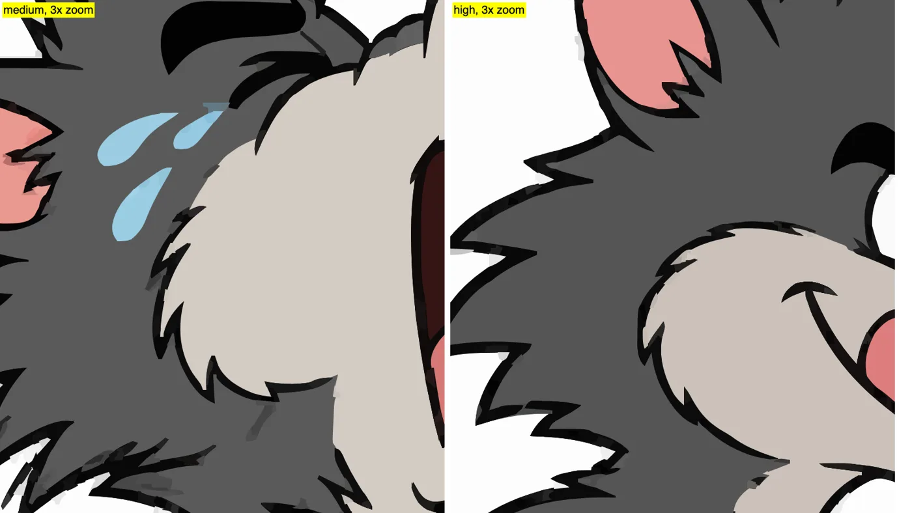
The numbers
Why we don't recommend it
Every new action needs new drawings. In a book drawn in code, a new movement is a few lines. Here, picking up a pot, climbing a ladder or running away each means another round of edits per character, plus cutting, checking and fixing. The film can only do what was drawn, and you notice the gaps.
Consistency has to be fought for, character by character. Hips, collars, sleeves, fur and mouths each needed their own handling. A safety filter or a second model could break a character halfway through.
It doesn't get cheaper with practice. The first scenes were polished. The later ones, made faster, came out rough. A Skill should make the hundredth chapter as good as the first. This method makes each one cost about the same, in money and attention.
So the story is finished and stays here, as a record of a path we walked and wouldn't recommend as it stands. What we kept from it: an image model is very good at painting a world that stays still. Joke Collection uses it for exactly that, sets and props only, while paper puppets drawn in code do all the acting. What would change our mind: image models that can hand back a character as a real, bendable rig, or video models that keep a character consistent and can be steered word by word.